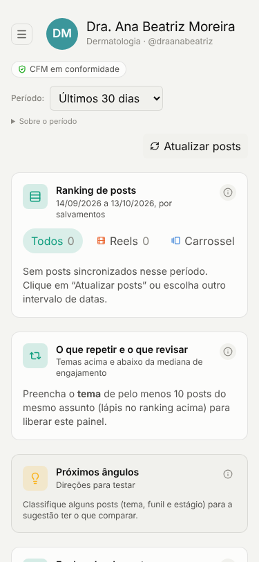
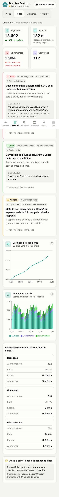

O painel mostrava dado sem dizer o que ele significa, e parte do dado estava errada. Este documento registra o que foi corrigido, a nova arquitetura, o que muda em cada tela, os textos, os componentes, o celular e a ordem de implementação.
13/10/2026Branch claude/elegant-edison-qqesdcStatus: feitoparciala fazer
1. O que estava errado nos dados
Antes de redesenhar, o painel precisava mostrar o número certo. A auditoria encontrou estes problemas, conferidos no banco de produção:
Problema
Exemplo real
Status
Anúncio julgado sem olhar o objetivo: campanha de tráfego e alcance contava como "desperdício" por não gerar conversa
Lana: 12% de "desperdício" → 3% real. Keylon: 31% → 17%. Juliana tem R$ 55 mil em tráfego que eram julgados por conversa
feito
Custo por conversa dividia toda a verba (inclusive tráfego e alcance) pelas conversas
Lana: R$ 29,17 mostrado → R$ 14,29 real
feito na telaSQL aguarda OK
Posts do último dia sumiam (data comparada em UTC)
"Últimos 30 dias" não mostrava os posts de hoje e parte de ontem
feito
"Este mês" comparava o mês pela metade com o mês anterior inteiro
Em 13/10, cards mostravam cerca de −58% sem ter havido queda
feito
PDF multiplicava por 100 os percentuais abaixo de 1%
CTR de 0,85% saía "85%" no relatório do cliente
feito
CTR e CPC usavam todos os cliques, rotulados como "clique no link"
Lana: 3,77% mostrado, 3,63% real
feito na telaSQL aguarda OK
WhatsApp: período deslocado 3 horas (meia-noite UTC)
Entravam conversas da noite da véspera
SQL aguarda OK
Comentários ruins viravam dúvida e ideia
289 "perguntas" em 5 clientes → 118 perguntas reais depois do filtro
feito
Três clientes com o mesmo CRM
Ana Claudia, Antônio Eduardo e HOMS mostram os mesmos 7.848 leads
decisão da equipe
Sync do Instagram apaga métrica boa quando uma chamada falha; frequência de anúncio é média de médias
Post pode aparecer com alcance vazio depois de um sync com erro
a fazer
As correções de SQL estão em supabase/migrations/20261013200000_correcoes_auditoria_dados.sql, testadas em leitura no banco e ainda não aplicadas.
2. Princípios
Toda tela responde cinco perguntas, nesta ordem
O que aconteceu?
Isso é bom ou ruim?
Por que aconteceu?
O que fazer agora?
Quais dados estão incompletos?
Toda conclusão segue o mesmo formato
Nenhum número aparece sozinho como conclusão. Cada achado vira um card com sete campos (src/lib/insight.ts), e a tela Resumo junta os de todas as áreas e ordena por prioridade (gravidade × impacto × confiança).
Diagnósticoo que aconteceu e por quê
Evidênciaos números usados, para conferir
Confiançaalta, média ou baixa, pela amostra e cobertura
Impactoo que muda se fizer
Próxima açãoespecífica, com botão que leva ao lugar
Responsávelmédico, social media, tráfego, atendimento, comercial
Riscoa limitação que pode mudar a conclusão
Exemplo real (Lana, 13/09 a 12/10). Dado: conversa vinda de campanha de tráfego custou R$ 119,58; de campanha de mensagem, R$ 14,29. Diagnóstico: 45% da verba está em tráfego, que leva ao perfil e não ao WhatsApp. Ação: pausar duas campanhas de tráfego (R$ 697, 2 conversas) e passar ~R$ 300 para a campanha de mensagem que custa R$ 8,76 por conversa, subindo 20% a cada 3–4 dias. Confiança: alta. Risco: lead feito no site não chega ao painel.
Bom ou ruim só com referência confiável
Verde, amarelo e vermelho aparecem só quando há referência de mercado com metodologia publicada (src/lib/benchmarks.ts). Sem isso, a régua é o histórico do próprio perfil, no mesmo formato ou no mesmo objetivo de campanha.
Métrica
Bom
Na média
Abaixo
Fonte
Tempo até responder no WhatsApp
até 5 min
5 a 30 min
mais de 30 min
HBR 2011; Opinion Box
Interação (de cada 100 que viram)
5 ou mais
2,5 a 5
menos de 2,5
mLabs Índice 2025 (Brasil)
Crescimento de seguidores por mês (até 10 mil)
2% ou mais
0,8% a 2%
menos de 0,8%
Socialinsider 2025
Posts por semana
3 ou mais
2 a 3
menos de 2
Hootsuite Healthcare; Rival IQ
Lead que agenda
40% ou mais
20% a 40%
menos de 20%
Liine 2023 (EUA)
Faltas na consulta
até 10%
10% a 20%
mais de 20%
Dantas 2018; Doctoralia
Fadiga de anúncio
custo por resultado 2x o normal do mesmo objetivo
regra da própria Meta
Custo por conversa, custo por lead, taxa de salvamento e taxa de compartilhamento não têm referência independente confiável. Aparecem sem cor e comparados com o período anterior.
3. Nova navegação
De 17 itens soltos para 5 áreas com abas. Nenhum endereço mudou; links antigos continuam funcionando. feito
ResumoO que aconteceu e o que fazer esta semana
├ Resultado
└ Relatório para o cliente
ConteúdoComo o Instagram está indo
├ Visão (antes "Conteúdo")
├ Posts
├ Melhores (antes "Top conteúdos")
└ Público (antes "Audiência")
AnúnciosOnde a verba rende e onde vazaComercialDo contato ao paciente
├ Funil (antes "Comercial")
├ WhatsApp
└ Jornada (equipe)
IdeiasO que postar a seguir
├ Ideias
├ Dúvidas dos pacientes
└ Inspiração (antes "Biblioteca")
Avançadorecolhido, só equipe Doctor Creator
├ Conversas · A analisar · Estrutura do CRM
├ Vendas/Kommo · Consultas · Automações
└ Portfólio (todos os clientes) · Admin
Áreas sem fonte conectada somem para o cliente (ex.: Anúncios sem conta de anúncio). Celular: barra inferior com as 5 áreas e "Mais". Computador: barra lateral com a descrição de cada área e as abas no topo do conteúdo.
4. Melhorias por tela
feito
Resumo › Resultado
Alerta de período incompleto no topo ("15 de 30 dias têm dado"; "hoje e ontem ainda estão fechando")
Resumo executivo: veredito e 4 a 6 frases com número
Próxima ação recomendada com responsável, impacto e botão específico, mais 2 ações da semana
Métricas com status e "O que é isso?" em linguagem simples
Por que aconteceu: o que trava e o que funciona
Cruzamento lead × engajamento × anúncio (inédito)
Gráficos recolhidos em "Ver gráficos do período"
feito
Anúncios
"Se eu tivesse que agir hoje, faria isso:" com até 3 ações de verba com valor
Campanhas em: escalar agora, manter, revisar criativo, revisar público, cortar, sem dados suficientes
Cada campanha comparada só com as do mesmo objetivo
Confiança e risco de mexer (mudança acima de 20% reinicia o aprendizado da Meta)
Comparação entre objetivos: de onde a conversa sai mais barata
feito
Ideias
Só nasce de pergunta feita por 2 ou mais pessoas, ou de tema e formato que performaram
Cada ideia: título, formato, objetivo, confiança, evidência, por que testar, gancho, roteiro curto, CTA e aviso CFM
Botões "Copiar gancho" e "Copiar pauta completa"
feito
Dúvidas › Voz do paciente
Filtro: spam, marcação solta, piada, desabafo, outro profissional, resposta da própria médica
Agrupa por tema e intenção (dúvida clínica, preço, agendamento, medo, objeção, comparação)
Resposta pronta para comentário, sugestão de post e de abordagem comercial
Pedido de dose ou remédio vai para "cuidado médico" e nunca vira post
"Por que N comentários ficaram de fora", com exemplos
em andamento
Comercial e Jornada
Funil em palavras: entraram → atendidos → agendaram → compraram, com a maior perda destacada
Separa problema de performance, de operação e de rastreamento
Checklist de dados: conectar WhatsApp, origem do lead, etapas padronizadas, ganho/perda, telefone ou Instagram
em andamento
Relatório
Três versões do mesmo conteúdo: WhatsApp curto, executiva para reunião, PDF detalhado
"Checagem antes de enviar": dado completo, recomendação com evidência, ruído de comentário, linguagem segura (CFM)
Texto editável antes de copiar
V2
Conteúdo › Visão, Posts, Melhores, Público
Insights no mesmo formato no topo de cada aba
Posts: coluna "trouxe lead?" a partir do cruzamento com o CRM
Público: "quando postar" virando ação, sem mapa de calor na frente
5. Textos de cards e botões
Antes
Depois
Por quê
Alcance (soma dos dias)
Pessoas alcançadas
Nome do que a pessoa reconhece
Taxa de engajamento 3,9%
Interação: 3,9 em cada 100
Sem "taxa"; dá para imaginar
Engajamento (mediana)
O post típico
"Mediana" não é palavra de leigo
CTR 1,2%
De cada 100 que viram o anúncio, 1 clicou
Explica a conta
CPM R$ 28
Custo para aparecer para mil pessoas: R$ 28
Explica a conta
Veredito: Sem tração
Revisar público: as pessoas clicam, mas não chamam
Diz o problema e o que mexer
Desperdício 33%
Verba que não entregou: 3%
Número certo e nome neutro
Ver mais
Ver as 3 campanhas para cortar
O botão diz o que vai acontecer
Abrir
Ver tempo de resposta por atendente
Idem
Baixar relatório PDF
Montar relatório para o cliente
Leva à tela com 3 versões e checagem
Sem dados sincronizados
Período incompleto: 15 de 30 dias têm dado do Instagram. Totais valem só para esses dias.
Diz o que falta e o que isso afeta
A analisar
(em Avançado) Etapas do CRM para classificar
Tarefa de equipe, não de cliente
6. Componentes novos
Componente
Para que serve
Onde está
InsightCard
Card dos 7 campos; título e status sempre visíveis, evidência e limitação em "Ver evidência"
components/insight-card.tsx
SeloStatus
Bom / Atenção / Ruim com ícone e cor (não só cor)
idem
BotaoAcao
Botão de 44px que leva à tela da ação
idem
OQueE
"O que é isso?" que abre a explicação simples da métrica
idem
ListaLimitacoes
"O que o painel ainda não consegue dizer", com quem resolve
idem
MetricaCard
Valor, status contra referência, comparação com período anterior e botão
routes/…index.tsx
BotaoCopiar
Copiar resposta, gancho, pauta ou texto do relatório
components/botao-copiar.tsx
AppShell
Navegação em 5 áreas, abas, cabeçalho compacto, barra inferior e "Mais"
components/app-shell.tsx, lib/nav.ts
Grafico + useIsMobile
Gráfico que cabe na tela, com menos datas no eixo no celular
components/grafico.tsx
7. Celular
Mesmas métricas do computador; só o layout muda. feito
Cabeçalho compacto e fixo: foto, nome do cliente, situação dos dados em uma linha e o período em um botão que abre uma folha com os períodos em botões grandes.
Barra inferior: Resumo, Conteúdo, Anúncios, Comercial, Ideias e Mais (Avançado, trocar cliente, tema, sair).
Abas da área: controle segmentado logo abaixo do cabeçalho. É a única rolagem lateral permitida.
Cards empilhados em uma coluna, margem de 16px, texto de 14px ou mais, tudo que se toca com 44px ou mais.
Gráficos simplificados: cabem na largura, primeiro e último dia sempre no eixo, legenda que quebra linha.
Tabelas viram cards abaixo de 640px; as que não podem virar mostram "Arraste para o lado →".
Por que sobrava espaço: a coluna de conteúdo crescia até a largura da maior tabela e o celular dava zoom para fora. Corrigido.

Antes (375px): menu escondido, filtro pequeno, painéis sem ação.

Depois (375px, dados de exemplo): abas, métricas, cards com "o que fazer", tabela em cards, barra inferior.
Dra. Lana Torres13/09–12/10 ▾
Hoje e ontem ainda estão fechando na Meta.
Resumo executivo
Período misto: uma parte funcionou, outra precisa de ajuste.
978 novos contatos no CRM. Quem chama no WhatsApp espera 47 min.
Próxima ação
Mensagem automática de boas-vindas e meta de resposta em 15 min.
Atendimento · impacto alto
LentoTempo até responder: 47 min
BomNovos seguidores: +5.400
ResumoConteúdoAnúnciosComercialIdeias
Resultado no celular, com números reais da Lana.
8. Checklist de QA responsivo
Larguras: 360, 375, 414, 768, 1024 e 1280px. Resultado detalhado em docs/qa/checklist-responsivo.md.
Nenhuma página rola para o lado em nenhuma largura (só as abas e tabelas marcadas)
Todo botão, filtro e aba tem 44px ou mais até 820px
Gráficos cabem no card; eixo com no máximo 10 datas em 360px; primeiro e último dia visíveis
Uma coluna de cards no celular; 2 a 3 no computador
Mesmas métricas e mesmos valores no celular e no computador
Cabeçalho fixo não cobre conteúdo; barra inferior respeita a área segura do iPhone
Folha de período e "Mais" abrem, fecham com toque fora e com Esc
Tabelas viram cards abaixo de 640px, ou mostram "Arraste para o lado →"
Texto do corpo com 14px ou mais; nenhum texto cortado sem reticências
Tema claro e escuro legíveis; status nunca indicado só por cor
Foco visível ao navegar pelo teclado
Alerta de período incompleto aparece no topo quando faltam 3 dias ou mais
PDF e impressão escondem menu, abas e barra inferior
Teste em iPhone real (Safari) pendente
9. MVP, V2 e V3
MVP quase pronto
Dados corretos nas telas (datas, PDF, anúncio por objetivo)
Contrato de insight e componentes compartilhados
Resultado para leigo, com cruzamento lead × engajamento
Anúncios como central de verba
Ideias e Voz do paciente com filtro
Navegação em 5 áreas e celular
Comercial/Jornada e Relatório em 3 versões em andamento
Aplicar a migração de SQL aguarda OK
V2
Insights no topo de Conteúdo, Posts, Melhores e Público
Resultado puxa também os insights de Comercial e Voz do paciente (preço/agendamento sem resposta)
Coluna "trouxe lead?" nos posts
Marcar ação como feita, adiada ou ignorada, e medir o efeito no período seguinte
Corrigir o sync que apaga métrica quando uma chamada falha; frequência real de anúncio
Decidir o CRM compartilhado de Ana Claudia, Antônio e HOMS
Teste em iPhone real
V3
Atribuição por pessoa (Jornada): comentário → conversa → lead → paciente, sem depender de correlação
Benchmark da própria carteira por especialidade, sem expor nomes de outros clientes
Alerta semanal no WhatsApp da equipe com as 3 ações da semana
Ads Benchmarking nativo da Meta por objetivo e região
Rever os benchmarks a cada 6 meses (próxima revisão: abril/2027)